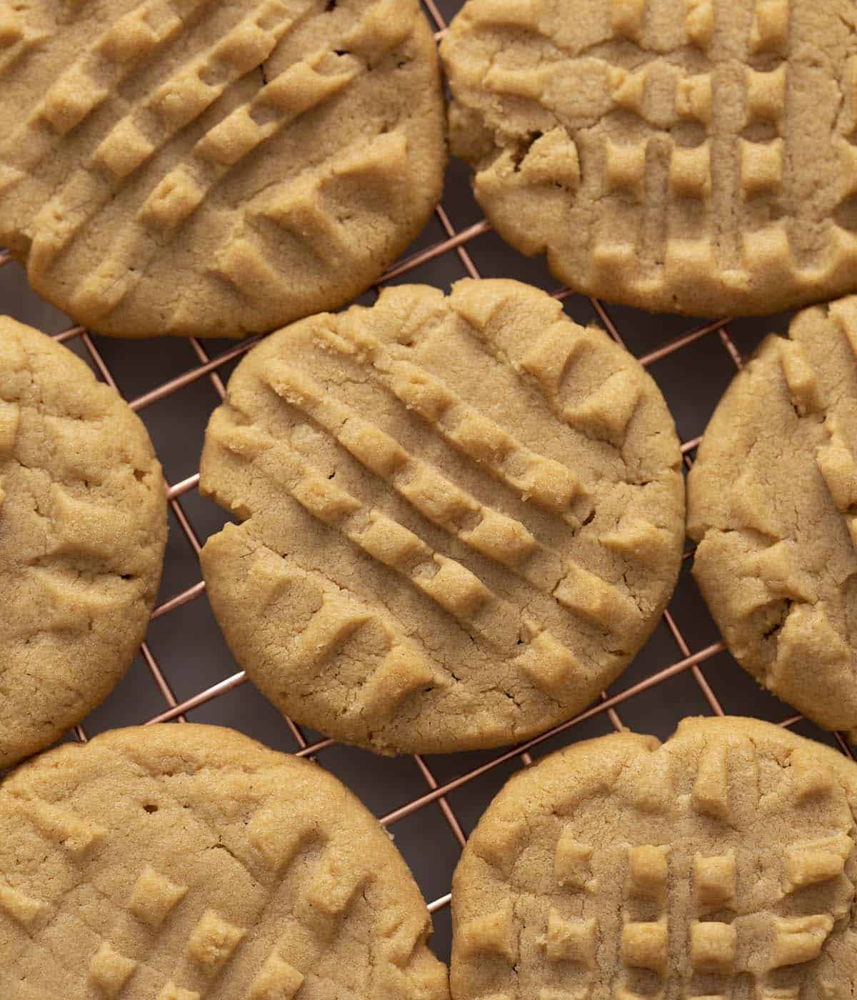

Ingredients
Instructions
Preheat over to 350F
Sift flour and baking powder together then whisk to combine.
Cream butter and sugars in a stand mixer fitted with a paddle attachment. You can add an optional 1/4-1/2 tsp sea salt.
Add peanut butter and mix until incorporated.
Mix in egg and vanilla extract then add flour mixture and beat until incorporated.
Roll dough into one inch balls and place on baking sheet lined with parchment paper.
Flatten cookies with a fork in a criss-cross pattern.
Bake cookies for about 10 minutes.
Allow cookies to cool completely on baking sheet, they need to set up before being transferred.